Introduction
Welcome to the UI for ASP.NET MVC quick start guide. In this guided tutorial you'll learn how to install, configure, and utilize UI for ASP.NET MVC to build a rich single page dashboard application that works beautifully on any device.
What You're Building
This guide will walk you through building Team Efficiency Dashboard, a single page app that does the following things:
- Connects rich chart visualizations and grids to an SQL data source
- Provides an interactive master/detail dashboard with filtering, sorting and exporting
- Looks great on any device size including: mobile, tablet and desktop
If you follow along until the end, here is what the finished app will look like.
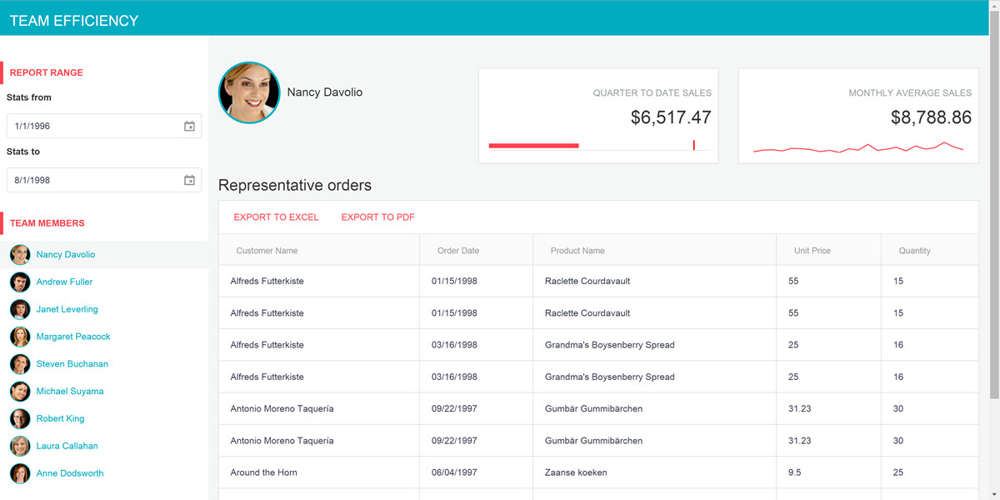
And here is what the app will look like on mobile.

UI for ASP.NET MVC vs Kendo UI Widgets
From client-side point of view, the vanilla HTML/JavaScript Kendo UI widgets and the rendered UI for ASP.NET MVC represent the same thing and provide the same capabilities. However, the UI for ASP.NET MVC wrappers provide additional capabilities for use with ASP.NET MVC and tooling for VisualStudio. Refer to the documentation for a complete feature comparison.
Important Resources
Getting Up and Running
In this chapter you're going to start with the basics, including starting a new project, adding Telerik UI for MVC to your project, and installing the quick start boilerplate.
Create a New MVC Project
UI for ASP.NET MVC can easily be added to an existing ASP.NET MVC project in just a few clicks using VisualStudio.
Start by creating a new ASP.NET MVC project. You'll use this project throughout the rest of this tutorial to build your application.
Exercise: Create a new MVC project
Click File > New Project
In the New Project dialog choose the ASP.NET Web Application template by expanding the "Templates" tree to Templates > Visual C# > Web
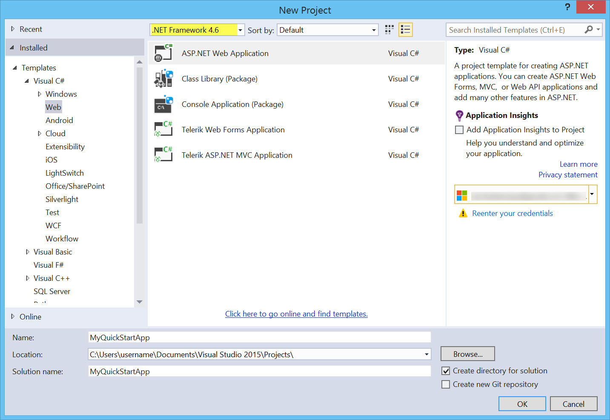
Give the application a name (ex: MyQuickStartApp)
Click OK to continue
In the New ASP.NET Project dialog, choose MVC from the 4.6 template selection
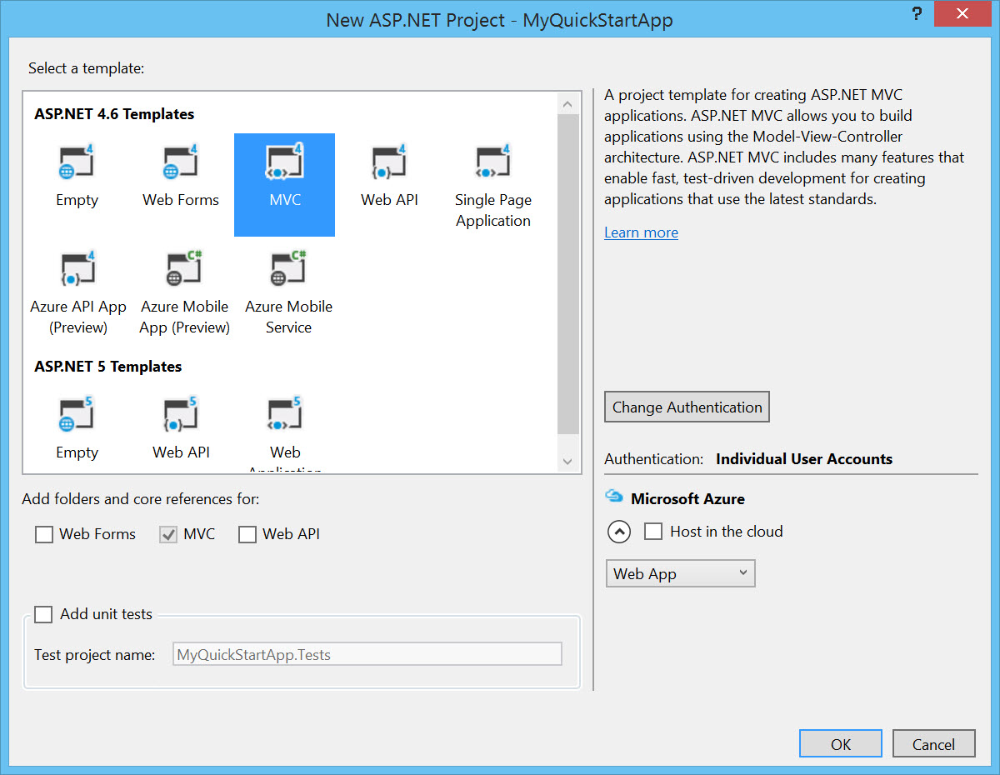
Click OK to finish
Install the Quick Start Boilerplate
With the new project created, it's time to start building your app. For this guide, we've scaffolded out a boilerplate project to act as a starting point for the Team Efficiency Dashboard.
The boilerplate has an HTML page, a layout, the Northwind database and some server-side code you may find in a typical MVC project.
Exercise: Install the quick start boilerplate
Using the package manager console, run the following command
PM> Install-Package KendoQsBoilerplate
Alternatively, you can use the package manager GUI
From the Solution Explorer right-click References, then choose Manage NuGet Packages

Search for KendoQsBoilerplate
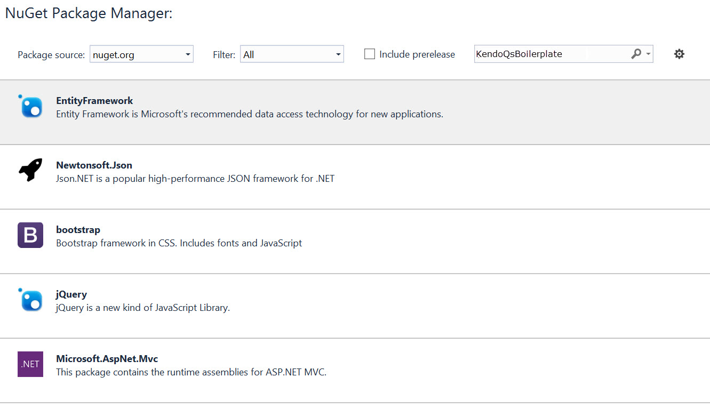
Click Install to continue
When the package installs you may be prompted to accept a license agreement for the NortwindDB, click I Accept to continue
It is normal for the quick start boilerplate to overwrite existing files, when prompted with a file conflict choose Yes to All

With the boilerplate installed, take a moment to run the application. If all went well, you should see something like this:

Convert to Telerik Application
At this point, you have the wire frame for a basic MVC application. Next you will be adding the UI for ASP.NET MVC to the application by using the Convert to Telerik Application tooling. When an application is converted to a Telerik application, all required HTML, CSS, JavaScript and .DLL libraries are added. This is the first step you would take to upgrade a new or existing MVC project to use Telerik UI for ASP.NET MVC.
Exercise: Convert to a Telerik Application
Stop the application if it is already running.
In the Solution Explorer right-click the project name and select Telerik UI for ASP.NET MVC > Convert to Telerik Application. This will launch the Project Configuration Wizard, from here you can choose settings for your Telerik project.
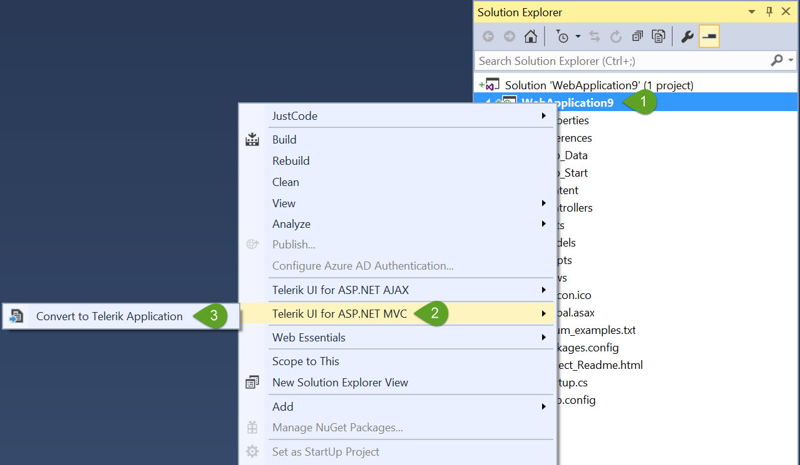
For this tutorial your project will use CDN support. This means all Kendo UI resources are served from Telerik's content delivery network (CDN) versus relying on your server for the assets. Mark the box Use CDN support and click Next to continue.
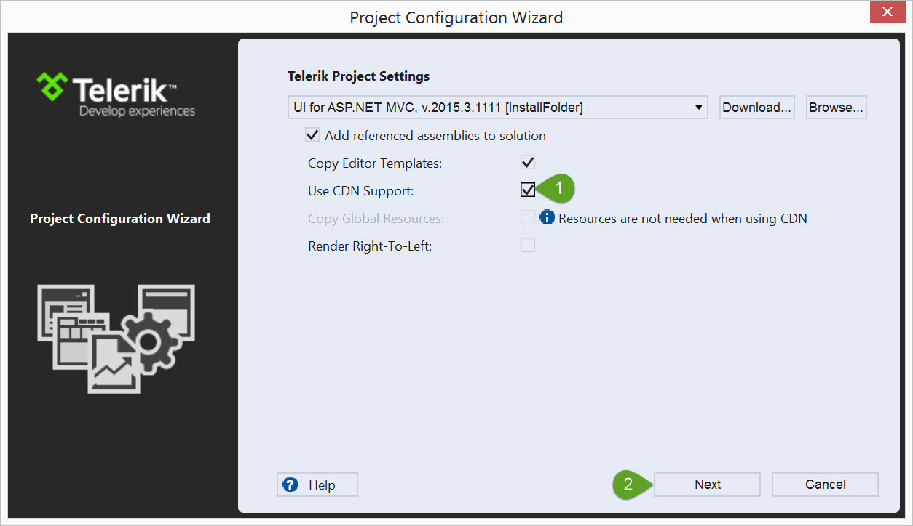
Since the boilerplate is designed with Bootstrap, choose Bootstrap from themes select box so the theme matches the current look of the boilerplate. You'll change the theme later when you're ready to customize the look of the application.
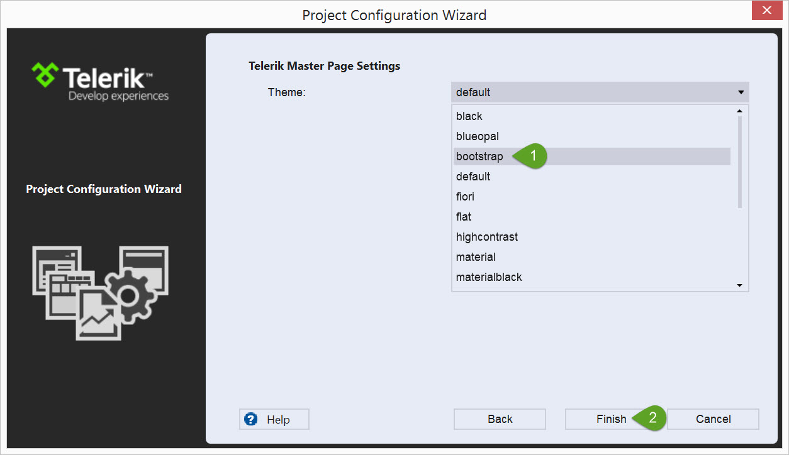
Open \Views\Shared_Layout.cshtml find and remove the following script bundle @Scripts.Render("~/bundles/modernizr"). This script is included with the Kendo UI assets.
Next, find the CSS bundle @Styles.Render("~/Content/css") and move it just above the closing head tag </head> this will make sure that any custom styles are applied when you customize the application.
The final code of the head section should look like this:
<meta charset="utf-8" />
<meta name="viewport" content="width=device-width, initial-scale=1.0">
<title>@ViewBag.Title - UI for MVC / Kendo Quick Start Guide</title>
<link href="http://cdn.kendostatic.com/2015.3.1111/styles/kendo.common-bootstrap.min.css" rel="stylesheet" type="text/css" />
<link href="http://cdn.kendostatic.com/2015.3.1111/styles/kendo.mobile.all.min.css" rel="stylesheet" type="text/css" />
<link href="http://cdn.kendostatic.com/2015.3.1111/styles/kendo.dataviz.min.css" rel="stylesheet" type="text/css" />
<link href="http://cdn.kendostatic.com/2015.3.1111/styles/kendo.bootstrap.min.css" rel="stylesheet" type="text/css" />
<link href="http://cdn.kendostatic.com/2015.3.1111/styles/kendo.dataviz.bootstrap.min.css" rel="stylesheet" type="text/css" />
<script src="http://cdn.kendostatic.com/2015.3.1111/js/jquery.min.js"></script>
<script src="http://cdn.kendostatic.com/2015.3.1111/js/jszip.min.js"></script>
<script src="http://cdn.kendostatic.com/2015.3.1111/js/kendo.all.min.js"></script>
<script src="http://cdn.kendostatic.com/2015.3.1111/js/kendo.aspnetmvc.min.js"></script>
<script src="@Url.Content("~/Scripts/kendo.modernizr.custom.js")"></script>
@Styles.Render("~/Content/css")
Tip: Because the Convert to Telerik application, Upgrade Project, or Configure Project wizards modify the
_Layout.cshtmlfile, be sure to check position of any custom CSS declarations afterward.
Now that your app is ready for development, let's add some simple input components to create a nice user experience.
Input Controls
In this chapter you'll learn how to add Kendo UI widgets to your application. UI for MVC has powerful HTML Helpers that configure and render Kendo UI widgets.
Kendo UI Helper Overview
Server-side wrappers
Telerik UI for ASP.NET MVC is a set of server-side wrappers. A server-wrapper does the following.
- Allows the developer to configure a Kendo UI widget via C# or VB.NET code - set its value, data source etc.
- Renders the HTML and JavaScript needed to initialize the Kendo UI widget. The widget options propagate to the client side via the widget initialization script.

Configuration
The Kendo UI HtmlHelper exposes all Kendo UI server wrappers.
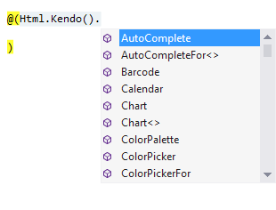
Widget options
The widget options are exposed via fluent interface.

Below is an example of how a Numeric Text Box input is created:
@(Html.Kendo().NumericTextBox()
.Name("name") // set the name of the NumericTextBox
.Value(10) //set the value
.Spinners(false) // disable the spinners
)
Adding a Kendo UI DatePicker
Let's open the Index.cshtml page under the folder views/home/. The Index.cshtml page is where most of the application's UI lives. This page currently contains basic HTML inputs to collect date input from the user. To provide a better user experience, replace the standard HTML inputs with Kendo UI date picker controls. The Kendo UI date picker controls offer users a fly out calendar to choose a desired date.
Note: The Kendo UI DatePicker control is touch and mouse friendly. No additional code is necessary to support tablets and phones.
Exercise: Replace StatsFrom and StatsTo TextBoxes with Kendo UI date pickers
Open Views/Home/Index.cshtml and find the StatsFrom text box helper
<!-- Stats From Date Picker -->
@Html.TextBox("StatsFrom", new DateTime(1996, 1, 1))
Replace the text box helper with a Kendo UI date picker. Set the Name property to StatsFrom and the Value with a new DateTime of 1996,1,1.
<!-- Stats From Date Picker -->
@(Html.Kendo().DatePicker()
.Name("StatsFrom")
.Value(new DateTime(1996, 1, 1))
)
Find the StatsTo text box helper
<!-- Stats To Date Picker -->
@Html.TextBox("StatsTo", new DateTime(1996, 1, 1))
Replace the text box helper with a Kendo UI DatePicker. Set the Name property to StatsTo and the Value with a new DateTime of 1998,8,1.
<!-- Stats To Date Picker -->
@(Html.Kendo().DatePicker()
.Name("StatsTo")
.Value(new DateTime(1998, 8, 1))
)
The Kendo UI HTML helper's fluent interface let you configure a widget's behavior and appearance. The code you just added uses the following properties:
- Name: Sets the rendered HTML element's id property.
- Value: Sets a default selected date value for the date picker
After you run your app with this change, you will see a calendar icon in the Stats from field. Click or tap the icon to reveal the date picker:

With the inputs upgraded let's move on to the extremely robust Kendo UI Grid.
Scaffolding
In this chapter, you'll learn how to add leverage Telerik UI for MVC's scaffolding capabilities. One feature that MVC developers are quite used to is scaffolding. Visual-Studio-powered MVC scaffolding is a code generation framework that allows you to hook up your model to a controller and render views that are strongly typed, among other things. Since the scaffolding is simply a code generation tool, you are free to change any of the code that it generated.
Upgrade the Database
A copy of the Northwind database is included with the Kendo UI Quick Start Boilerplate. Before you begin scaffolding make sure the Northwind database is upgraded. Having a working connection to the database is needed for the scaffolding wizard to work properly.
Note: Upgrading the database is only necessary for this guide because the database supplied must support multiple versions of SQL therefore we chose the lowest database version possible.
Exercise: Upgrade the Northwind Database
Note: If you do not have an SQL Server instance installed on your machine, you may need to install SQL Server Express Edition from Microsoft. You can download the free installer here.
Using Visual Studio's Server Explorer, expand DataConnections and right-click NorthwindDB > Modify Connection.
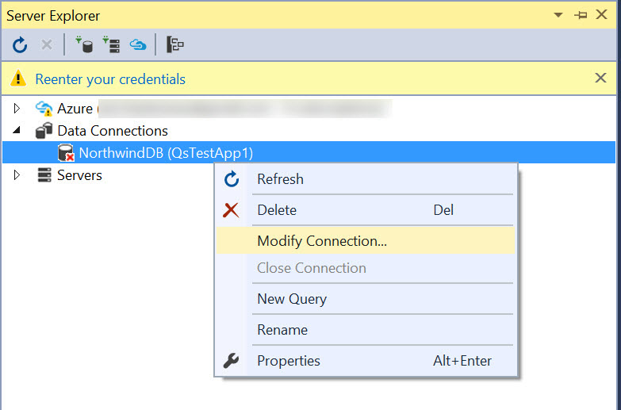
Next, click OK.

Finally, click Yes to complete the upgrade.
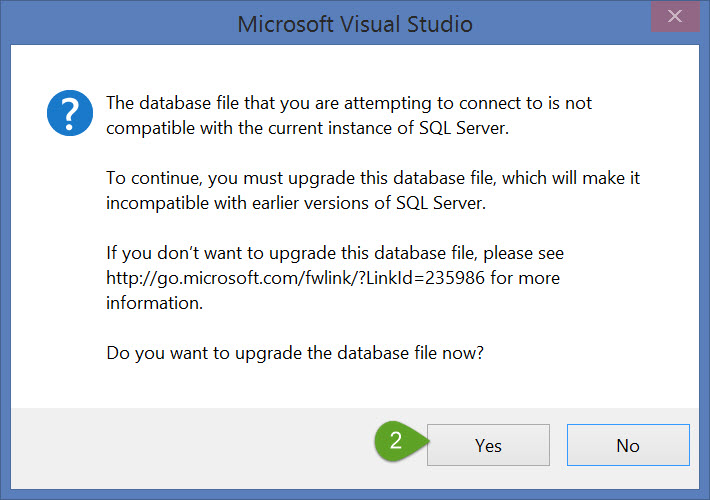
Once the upgrade is complete, expand the Northwind Database Tables to verify connectivity.
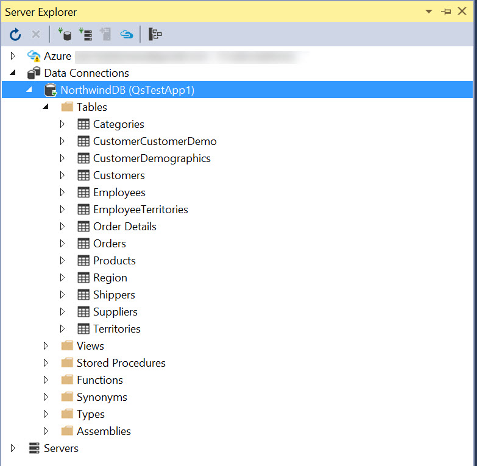
With the database upgraded use the scaffolding wizard to create an interactive grid view.
UI for MVC Scaffolding Wizard
The scaffolding wizard will aid you in creating the view by providing point a click configuration screen. Use the scaffolding wizard to create an interactive Kendo UI Grid view of invoices for the Team Efficiency Dashboard. By enabling grid features like: sorting, paging and exporting users will be able to analyze and share data in a familiar way.
Exercise: Scaffold a grid view of invoices
Start the scaffolding wizard by right-clicking Controllers > Add > New Scaffolded Item
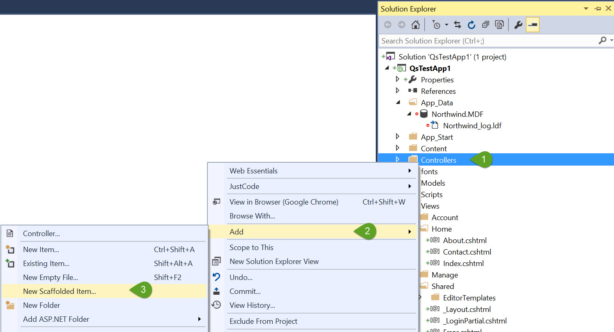
Choose the Kendo UI Scaffolder and click Add to continue

Notice the Scaffolder is capable of creating Grid, Chart, and Scheduler views for both C# and JavaScript. For this guide you'll be using the UI for MVC Grid scaffolding option. Choose UI for MVC Grid and click Add to continue.
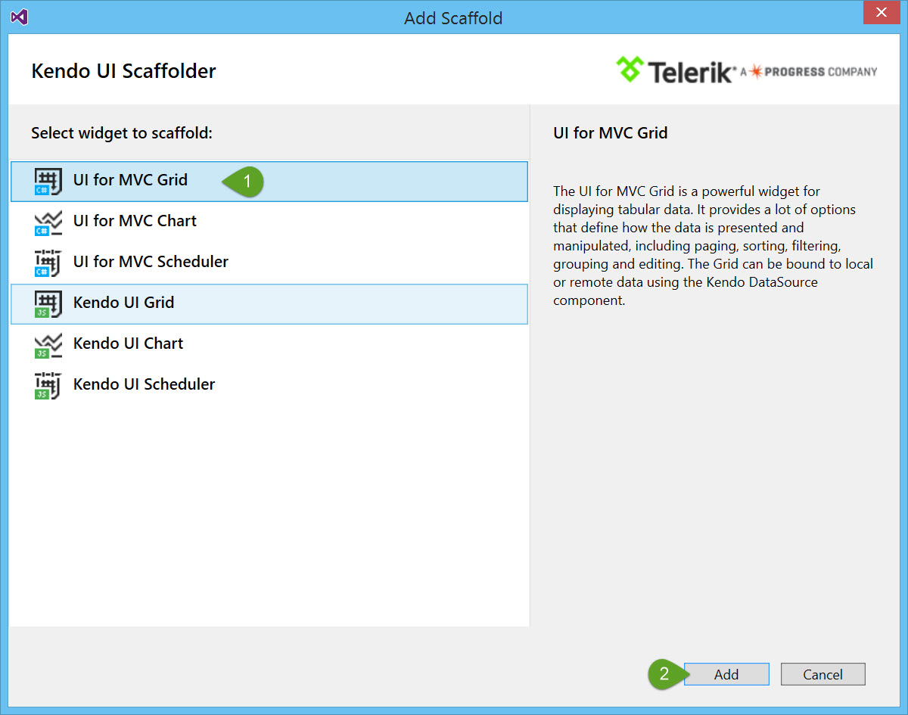
From MVC Grid scaffolding dialog, the grid's model options, grid options and events are defined. The Model Options control the following settings:
- Controller Name - The name of the controller created by the Scaffolder.
- View Name - The name of the view created, which will display the scaffolded grid.
- Model Class - The model the Scaffolder will use to build the view.
- Data Context Class - The Entity Framework DbContext used to connect the view to the data.
Define the grid's model options using the following values:
- Controller Name: InvoiceController
- View Name: Index
- Model Class: Invoice
- Data Context Class: NorthwindDBContext
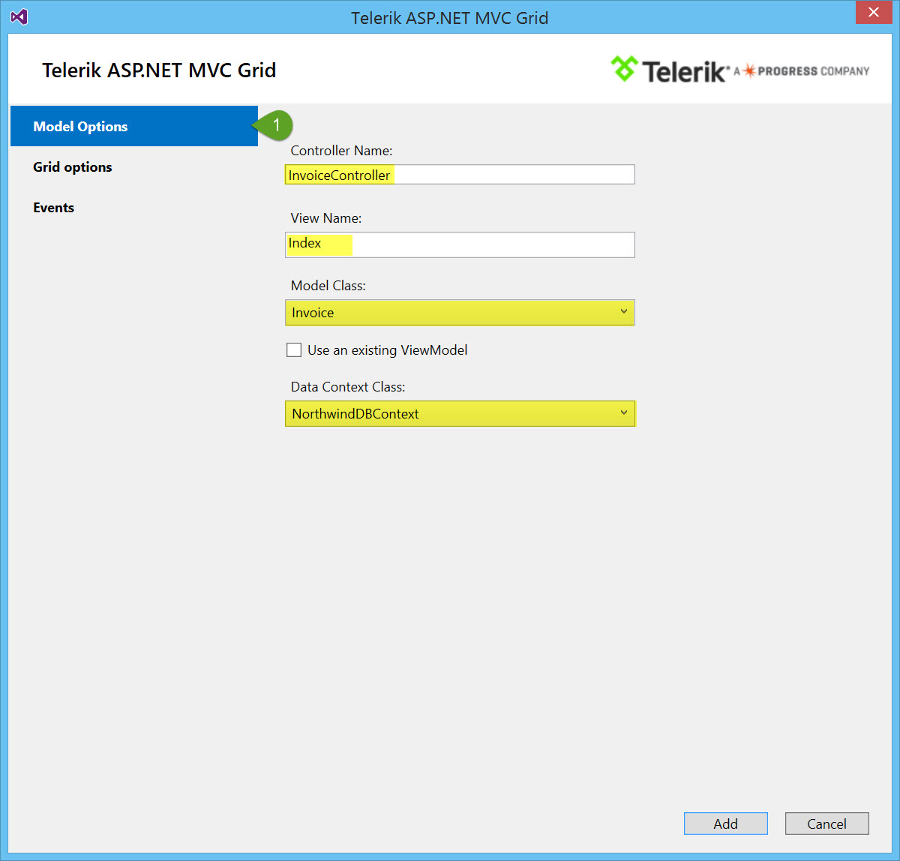
The Grid Options control what features are scaffolded & enabled on the grid including:
- DataSource Type - Ajax, Server or WebApi.
- Editable - Enable the editing, configure the edit mode (InLine, InCell or PopUp) and the operations to be included (Create, Update, Destroy).
- Filterable - Enable the filtering of the grid and select the filter mode.
- Column Menu - Enable the column menu.
- Navigatable - Enable the keyboard navigation.
- Pageable - Enable the paging of the grid.
- Reorderable - Enable the column reordering.
- Scrollable - Enable the scrolling of the grid table.
- Selectable - Enable the selection and specify the selection mode and type.
- Sortable - Enable the sorting and specify the sorting mode.
- Excel Export - Enable the Excel export functionality.
- PDF Export - Enable the PDF export functionality.
Define the grid's options by setting the following values:
- unchecked Scrollable
- checked Sortable
- checked Pageable
- checked Excel Export
- checked PDF Export

Click Add to continue and create the scaffolded items.
The Scaffolder will create the following files:
Controllers/InvoiceController.cs- This controller has the actions for the features selected in the scaffolding wizard.Indexreturns the viewInvoices_Read- gets all invoices from the database and returns a JSON formatted DataSourceRequest object. The DataSourceRequest will contain the current grid request information - page, sort, group and filter.Excel_Export_Save- creates an XLS exported File result.Pdf_Export_Save- creates a PDF exported File result.
Views/Invoice/Index.cshtml- This view contains the markup and HTML helper responsible for rendering the grid control.
Run the application and navigate to /Invoice/index to see the generated grid control. You should see the following output:
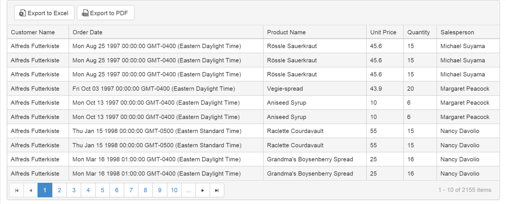
Now that the UI for MVC Scaffolder has generated a starting point for working with the grid, you can modify the scaffolded code to meet your needs. In the next chapter we'll do just that.
Kendo UI Grid
In this chapter you will modify the scaffolded grid code to further customize the grid's appearance. Additionally, you'll be incorporating the grid into the Team Efficiency Dashboard's main view.
Configuring Kendo UI Grid Options
As you may have noticed in the scaffolding wizard, the Grid is a versatile component with many options. The options for the grid are set using the server-side HTML wrapper. Take a close look at the code generated by the Scaffolder in /Views/Invoices/Index.cshtml, below is a breakdown with additional comments of what each configuration method is used for. Also make note that the fluent API chain can be extended to include further options, and there is no strict order in which the options are defined.
@(Html.Kendo().Grid<KendoQsBoilerplate.Invoice>() // Kendo UI Grid Wrapper
// Name, also HTML elements "id" attribute
.Name("grid")
// Grid column bindings
.Columns(columns =>
{
columns.Bound(c => c.CustomerName);
columns.Bound(c => c.OrderDate);
columns.Bound(c => c.ProductName);
columns.Bound(c => c.UnitPrice);
columns.Bound(c => c.Quantity);
columns.Bound(c => c.Salesperson);
})
// Toolbars
.ToolBar(toolbar => {
toolbar.Excel();
toolbar.Pdf();
})
// Enable Paging
.Pageable()
// Enable Sorting
.Sortable(sortable => {
sortable.SortMode(GridSortMode.SingleColumn);
})
// Disable Scrolling
.Scrollable(scrollable => scrollable.Enabled(false))
// Datasource configuration
.DataSource(dataSource => dataSource
.Ajax()
// Read method action and controller
.Read(read => read.Action("Invoices_Read", "Invoice"))
)
)
TIP: If you find the comments above useful, feel free to copy them into your project. Comments are completely valid inside the Fluent API chain.
Exercise: Modify the Grid's Name property
Change the grid's Name from "grid" to "EmployeeSales". This is an important step since the Name property of all UI for MVC wrappers set the id attribute of the rendered Kendo UI widget.
Find the .Name method and change the value from "grid" to "EmployeeSales"
@(Html.Kendo().Grid<KendoQsBoilerplate.Invoice>()
.Name("grid")
...
)
The resulting code should be
@(Html.Kendo().Grid<KendoQsBoilerplate.Invoice>()
.Name("EmployeeSales")
...
)
Now add the EmployeeSales grid to the Dashboard page /Home/Index.cshtml. To keep things tidy, add the grid to the Dashboard as a child action using Html.Action in the /Home/Index.cshtml view. This will keep the grid's view and controller code separate and easy to find.
Exercise: Add the Grid to the Dashboard
Ensure the application's layout is not repeated, set the Layout of the view to null. Skipping this step will result in duplicate scripts which could cause the page to load improperly.
At the top of /Views/Invoices/Index.cshtml add
@{ Layout = null;}
The resulting code should be:
@{ Layout = null;}
@(Html.Kendo().Grid<KendoQsBoilerplate.Invoice>()
.Name("EmployeeSales")
...
)
Add the grid as a child action. Open /Home/Index.cshtml and locate the <!-- Invoices --> placeholder and replace it with the child action @Html.Action("Index","Invoice")
<!-- Invoices -->
@Html.Ipsum().table(5, 3, "d,t,n", new { @class = "table table-striped table-bordered" })
The resulting code should be:
<!-- Invoices -->
@Html.Action("Index","Invoice")
Run the project and visit the dashboard page /Home/Index in the browser. Take a moment to interact with the grid's sorting, paging, and exporting features.
Currently the data in Grid column Order Date is verbose and should look something like Mon Aug 25 1997 00:00:00 GMT-0400 (Eastern Daylight Time). This isn't very user-friendly, let's change that.
The grid's data can easily be formatted by adding the .Format property chain to any column. Use the Date Format MM/dd/yyyy on the OrderDate column using the .Format method.
Exercise: Customize the Order Date column formatting.
You can keep the application running while performing this exercise.
Open '/Views/Invoice/Index.cshtml' and find the OrderDate column property.
columns.Bound(c => c.OrderDate);
Set the OrderDate column's Format property to "{0:MM/dd/yyyy}" to apply the format to the column.
The resulting code should be:
columns.Bound(c => c.OrderDate).Format("{0:MM/dd/yyyy}");
Refresh the application to see the formatting changes take place. Notice the OrderDate column is now much easier on the eye.
While interacting with the grid you may have noticed that all of the records are being pulled from the database. Don't worry, as we progress through the next several chapters that will change as you learn how to work with Kendo UI and datasources on the client side. First, let's setup some additional UI elements to provide a source for filtering data.
Kendo UI ListView
In this chapter you will learn about the Kendo UI ListView control and client-side templates. Using the ListView you'll create a list of employees containing the employee's full name and avatar image. This ListView will allow users to interact with the dashboard by filtering the data.
The ListView Control
The purpose of Kendo UI ListView is to display a custom layout of data-bound items through templates. The ListView is ideally suited for scenarios where you wish to display a list of items in a consistent manner.
The ListView is designed to put you back in control when it comes to displaying data. It does not provide a default rendering of data-bound items, but, instead, it relies entirely on templates to define how a list of items - including alternating items and items being edited - is displayed.
Example:
@(Html.Kendo().ListView(Model) //The listview will be initially bound to the Model which is the Products table
.Name("productListView") //The name of the listview is mandatory. It specifies the "id" attribute of the widget.
.TagName("div") //The tag name of the listview is mandatory. It specifies the element which wraps all listview items.
.ClientTemplateId("template") // This template will be used for rendering the listview items.
.DataSource(dataSource => {
dataSource.Read(read => read.Action("Products_Read", "ListView"));
}) // DataSource configuration. It will be used on paging.
.Pageable() //Enable paging
)
Use a ListView to create selectable list of employees containing the employee's full name and avatar image.
Exercise: Add a ListView to the dashboard.
Since you will need to update the HomeController stop project if it is already running.
Open /Views/Home/Index.cshtml and find the placeholder <!-- Employee List View -->.
Remove the <ul> and its child elements that follow <!-- Employee List View -->.
Now add a Kendo UI ListView of type KendoQsBoilerplate.Employee using the Fluent HTML Helper @(Html.Kendo().ListView<KendoQsBoilerplate.Employee>().
Set the Name property to "EmployeesList".
.Name("EmployeesList")
Set the ClientTemplateId property to "EmployeeItemTemplate". The template EmployeeItemTemplate will be created later in the exercise.
.ClientTemplateId("EmployeeItemTemplate")
Set the TagName property to "ul". The TagName is the element type that will wrap the ListView items when the control is rendered. In this case, we're creating an unordered list element.
.TagName("ul")
Set the DataSource read action to "EmployeeList_Read" and the controller to "Home". The action will be created later in the exercise.
.DataSource(dataSource =>
{
dataSource.Read(read => read.Action("EmployeesList_Read", "Home"));
})
Set the select mode by setting the Selectable property to ListViewSelectionMode.Single.
.Selectable(s => s.Mode(ListViewSelectionMode.Single))
The resulting code should look like the following:
<!-- Employee List View -->
@(Html.Kendo().ListView<KendoQsBoilerplate.Employee>()
.Name("EmployeesList")
.ClientTemplateId("EmployeeItemTemplate")
.TagName("ul")
.DataSource(dataSource =>
{
dataSource.Read(read => read.Action("EmployeesList_Read", "Home"));
})
.Selectable(s => s.Mode(ListViewSelectionMode.Single))
)
Now that the ListView is defined you'll need to supply the datasource with employee data by creating the read action for the ListView.
Exercise: Create the EmployeesList_Read action.
Open Controllers/HomeController.cs and add a reference to Kendo.Mvc.UI and Kendo.Mvc.Extensions. These dependencies are needed for the DataSourceRequest object and .ToDataSourceResult extension method.
At the top of the file you should have the following statements:
using Kendo.Mvc.UI;
using Kendo.Mvc.Extensions;
Now, create an ActionResult named EmployeesList_Read that accepts a DataSourceRequest parameter. The parameter of type DataSourceRequest will contain the current ListView request information. Decorate that parameter with the DataSourceRequestAttribute which is responsible for populating the DataSourceRequest object.
public ActionResult EmployeesList_Read([DataSourceRequest]DataSourceRequest request)
{
}
Use entity framework to query a list of employees, ordered by FirstName from the database and return the result as Json using the .ToDataSourceResult extension method, the method will format the data to be consumed by the ListView.
public ActionResult EmployeesList_Read([DataSourceRequest]DataSourceRequest request)
{
var employees = db.Employees.OrderBy(e => e.FirstName);
return Json(employees.ToDataSourceResult(request, ModelState), JsonRequestBehavior.AllowGet);
}
The ListView is almost complete, however the ListView still needs a template to apply to the data when it is rendered to the page. In the previous exercise the ClientTemplateId was defined, but was not created. Let's learn about Kendo UI Templating and complete the ListView.
Kendo UI Templates
The Kendo UI Templates provide a simple-to-use, high-performance JavaScript templating engine within the Kendo UI framework. Templates offer a way to create HTML chunks that can be automatically merged with JavaScript data. They are a substitute for traditional HTML string building in JavaScript.
Kendo UI Templates use a simple templating syntax called hash templates. With this syntax, the # (hash) sign is used to mark areas in a template that should be replaced by data when the template is executed. The # character is also used to signify the beginning and end of custom JavaScript code inside the template.
There are three ways to use the hash syntax:
- Render values as HTML:
#= #. - Use HTML encoding to display values:
#: #. - Execute arbitrary JavaScript code:
# if (true) { # ... non-script content here ... # } #.
Example:
<script type="text/x-kendo-template" id="myTemplate">
#if(isAdmin){#
<li>#: name # is Admin</li>
#}else{#
<li>#: name # is User</li>
#}#
</script>
Exercise: Create the ListView template for showing an employee.
Open /Views/Home/Index.cshtml and find the placeholder <!-- Kendo Templates -->.
After <!-- Kendo Templates --> add a new <script> element of type "text/x-kendo-tmpl" with an id of EmployeeItemTemplate
The resulting code should be:
<!-- Kendo Templates -->
<script type="text/x-kendo-tmpl" id="EmployeeItemTemplate">
</script>
<!-- /Kendo Templates -->
Inside the template create a <li> and set the class to employee.
Add a <div> element inside the <li>. Inside the <div> add an image that corresponds to the EmployeeId by setting the src to "@(Url.Content("~/content/employees/"))#:EmployeeId#-t.png" and a <span> with the template field #: FullName #.
The resulting code should be:
<!-- Kendo Templates -->
<script type="text/x-kendo-tmpl" id="EmployeeItemTemplate">
<li class="employee">
<div>
<img src="@(Url.Content("~/content/employees/"))#:EmployeeId#-t.png" />
<span> #: FullName #</span>
</div>
</li>
</script>
<!-- /Kendo Templates -->
Run the application to see the ListView in action.
If everything was done correctly, the list view should look like this.
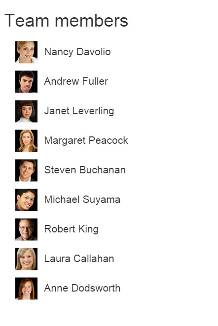
At this point you can select items from the list, but before the dashboard can become truly interactive you'll need to work with the client-side APIs.
Client Side
The client side is where Kendo UI really shines. Kendo UI uses a common JavaScript language and standards so that it’s easy for any JavaScript developer to get started. In this chapter you'll learn about client-side events and how to take control of Kendo UI using JavaScript.
Working with Client-Side Events
Telerik UI for MVC helpers provide an Events method that is part of the HTML Helper's property chain. The Events method is used to set event handlers for the Kendo UI widget. Each widget has a variety of events that can be handled including: cancel, change, dataBound, dataBinding, edit, remove, and save.
Example:
@(Html.Kendo().ListView<ProductViewModel>()
.Name("listView")
.TagName("div")
.ClientTemplateId("template")
.DataSource(dataSource => {
dataSource.Read(read => read.Action("Products_Read", "ListView"));
})
.Events(e => e
.DataBound("productListView_dataBound")
.Change("productListView_change")
)
)
Let's continue to work with the EmployeesList that was created in the previous chapter. The list is selectable, but when the application starts the first item should be selected by default giving the user a starting point to begin interacting with the dashboard.
Exercise: Select the first list item by default.
Find the EmployeeList
<!-- Employee List View -->
@(Html.Kendo().ListView<Employee>()
.Name("EmployeesList")
...
.Selectable(s => s.Mode(ListViewSelectionMode.Single))
)
Add an event handler named onListDataBound for the DataBound event for the EmployeeList.
@(Html.Kendo().ListView<KendoQsBoilerplate.Employee>()
...
.Selectable(s => s.Mode(ListViewSelectionMode.Single))
.Events(e => e.DataBound("onListDataBound"))
)
The resulting code should be:
<!-- Employee List View -->
@(Html.Kendo().ListView<KendoQsBoilerplate.Employee>()
.Name("EmployeesList")
.ClientTemplateId("EmployeeItemTemplate")
.TagName("ul")
.DataSource(dataSource =>
{
dataSource.Read(read => read.Action("EmployeesList_Read", "Home"));
dataSource.PageSize(9);
})
.Selectable(s => s.Mode(ListViewSelectionMode.Single))
.Events(e => e.DataBound("onListDataBound"))
)
In the same view find the Scripts section.
@section Scripts {
<script>
//Custom Scripts
</script>
}
In the <script> element and add a function onListDataBound.
Select the first element by calling the .select function on the ListView object this and pass in the element first employee element using the jQuery selector $(".employee:first").
@section Scripts {
<script>
//Custom Scripts
function onListDataBound(e) {
this.select($(".employee:first"));
}
</script>
}
Refresh the page to see that the first item in the list is selected by default.

Selecting the first item using the DataBound event was a good start. Next we'll take it a step further by using the selected item to populate a Kendo UI template showing the selected employee on the dashboard.
Exercise: Use the Change event to populate a template.
Add an event handler named onCriteriaChange for the Change event for the EmployeeList.
@(Html.Kendo().ListView<Employee>()
...
.Selectable(s => s.Mode(ListViewSelectionMode.Single))
.Events(e => e.DataBound("onListDataBound")
.Change("onCriteriaChange"))
)
Find the <!-- Kendo Templates --> placeholder.
<!-- Kendo Templates -->
...
<!-- /Kendo Templates -->
Add a new template that will display the selected employee's image and full name.
<!-- Kendo Templates -->
<script type="text/x-kendo-tmpl" id="employeeAvatarTemplate">
<img src="@(Url.Content("~/content/employees/"))#:EmployeeId#.png" />
<span>#:FullName#</span>
</script>
Find the <script> section.
<script>
...
</script>
Add a function named getSelectedEmployee that returns the selected employee from the EmployeeList.
function getSelectedEmployee() {
var employeeList = $("#EmployeesList").data("kendoListView"),
employee = employeeList.dataSource.getByUid(employeeList.select().attr("data-uid"));
return employee;
}
Add a function named updateEmployeeAvatar that binds the selected employee data to the employeeAvatarTemplate and places the template's content in the employee-about element.
function updateEmployeeAvatar() {
var employee = getSelectedEmployee(),
template = kendo.template($("#employeeAvatarTemplate").html());
//apply template
$("#employee-about").html(template(employee));
}
Add a function named onCriteriaChange, this function will handle the Change event and call updateEmployeeAvatar.
function onCriteriaChange() {
updateEmployeeAvatar();
}
Refresh the page and select an employee from the EmployeeList. Selecting an item should update the dashboard with the selected employee's data.
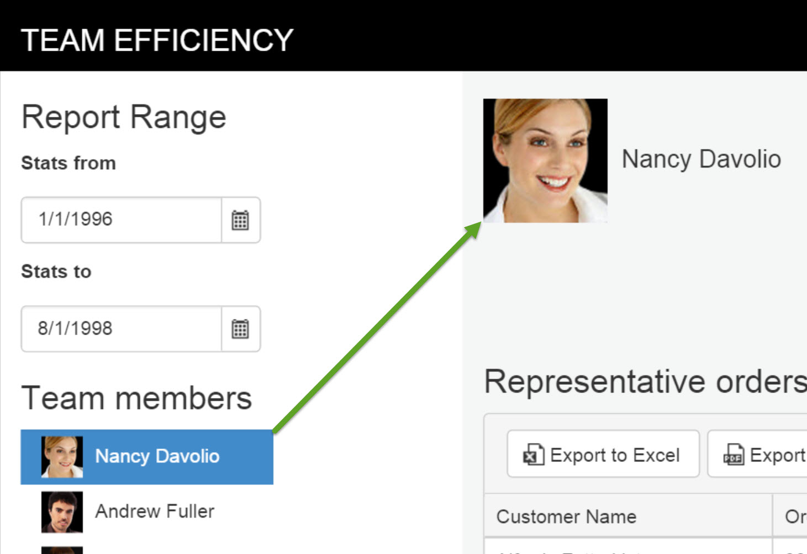
Find and remove the <!-- Employee Avatar --> placeholder code, it is no longer needed because the element is created dynamically.
Remove:
<!-- Employee Avatar -->
@Html.Placehold(90, 90, "Face")
<span>Full Name </span>
Now that you know how to work with client-side APIs, let's enhance the Team Efficiency Dashboard by working with datasources.
Kendo UI Datasource
In this chapter you'll learn how to work with Kendo UI datasources.
Working with the Kendo UI Datasource
The Kendo UI DataSource component plays a central role in practically all web applications built with Kendo UI. It is an abstraction for using local data—arrays of JavaScript objects—or remote data—web services returning JSON, JSONP, OData or XML.
The Kendo UI DataSource has many abilities and responsibilities, among which to:
- Retrieve data from a remote endpoint.
- Maintain the structure and type of the data (schema).
- Process serialization formats to and from a remote endpoint.
- synchronize updates—create, update, delete to and from a remote endpoint.
- Maintain an in-memory cache of data, including changes for updating to a remote endpoint.
- Calculate and maintain aggregates, sorting order and paging.
- Provide a query mechanism via filter expressions.
For detailed information on the capabilities of the DataSource, refer to its configuration API, methods, and events, and demos.
At this point the dashboard is showing all invoice data. Let's use the EmployeeList list view and StatsFrom/StatsTo date pickers to filter the invoice grid by invoking the grid's datasource.
Exercise: Create a filter.
In the view /Views/Home/Index.cshtml find the scripts section.
<script>
...
</script>
Add a function named getEmployeeFilter that gets the employeeId, salesPerson, statsFrom and statsTo values and returns a JSON object.
The resulting code should be:
function getEmployeeFilter() {
var employee = getSelectedEmployee(),
statsFrom = $("#StatsFrom").data("kendoDatePicker"),
statsTo = $("#StatsTo").data("kendoDatePicker");
var filter = {
employeeId: employee.EmployeeId,
salesPerson: employee.FullName,
statsFrom: statsFrom.value(),
statsTo: statsTo.value()
}
return filter;
}
In the view /Views/Invoice/Index.cshtml find the EmployeeSales grid.
@(Html.Kendo().Grid<KendoQsBoilerplate.Invoice>()
.Name("EmployeeSales")
...
.Scrollable(scrollable => scrollable.Enabled(false))
.DataSource(dataSource => dataSource
.Ajax()
.Read(read => read.Action("Invoices_Read", "Invoice"))
)
)
On the grid's DataSource property, set the Data property to getEmployeeFilter. The Data property supplies additional data to the server, in this case the data is our filter parameters.
.DataSource(dataSource => dataSource
.Ajax()
.Read(read => read.Action("Invoices_Read", "Invoice")
.Data("getEmployeeFilter"))
)
Add the property AutoBind to the end of the property chain and set the value to false. Setting AutoBind to false tells UI for MVC that the datasource's Read action is invoked on manually on the client.
The resulting code should be:
@(Html.Kendo().Grid<KendoQsBoilerplate.Invoice>()
.Name("EmployeeSales")
...
.Scrollable(scrollable => scrollable.Enabled(false))
.DataSource(dataSource => dataSource
.Ajax()
.Read(read => read.Action("Invoices_Read", "Invoice")
.Data("getEmployeeFilter"))
)
.AutoBind(false)
)
In the view /Views/Home/Index.cshtml add a function named refreshGrid, this function will invoke the grid's Read action.
function refreshGrid() {
var employeeSales = $("#EmployeeSales").data("kendoGrid");
employeeSales.dataSource.read();
}
Find the function onCriteriaChange and add a call to the refreshGrid function. This will cause the Grid's data to refresh whenever the employee selection changes.
function onCriteriaChange() {
updateEmployeeAvatar();
refreshGrid();
}
Next, we'll need to update the grid's Read action to apply the filter using Entity Framework.
Open Controllers/InvoiceController.cs and find the Invoices_Read action.
public ActionResult Invoices_Read([DataSourceRequest]DataSourceRequest request)
{
IQueryable<Invoice> invoices = db.Invoices;
DataSourceResult result = invoices.ToDataSourceResult(request, invoice => new {
OrderID = invoice.OrderID,
CustomerName = invoice.CustomerName,
OrderDate = invoice.OrderDate,
ProductName = invoice.ProductName,
UnitPrice = invoice.UnitPrice,
Quantity = invoice.Quantity,
Salesperson = invoice.Salesperson
});
return Json(result);
}
Add the parameters salesPerson, statsFrom and statsTo to the action.
public ActionResult Invoices_Read([DataSourceRequest]DataSourceRequest request,
string salesPerson,
DateTime statsFrom,
DateTime statsTo)
Using the parameter values filter the invoices using a Where LINQ query.
The resulting code should be:
public ActionResult Invoices_Read([DataSourceRequest]DataSourceRequest request,
string salesPerson,
DateTime statsFrom,
DateTime statsTo)
{
var invoices = db.Invoices.Where(inv => inv.Salesperson == salesPerson)
.Where(inv => inv.OrderDate >= statsFrom && inv.OrderDate <= statsTo);
DataSourceResult result = invoices.ToDataSourceResult(request, invoice => new {
OrderID = invoice.OrderID,
CustomerName = invoice.CustomerName,
OrderDate = invoice.OrderDate,
ProductName = invoice.ProductName,
UnitPrice = invoice.UnitPrice,
Quantity = invoice.Quantity,
Salesperson = invoice.Salesperson
});
return Json(result);
}
Run the project to see the behavior. Now the EmployeeList and EmployeeSales grid are in sync. When an employee is selected, only that employees data will show in the grid.
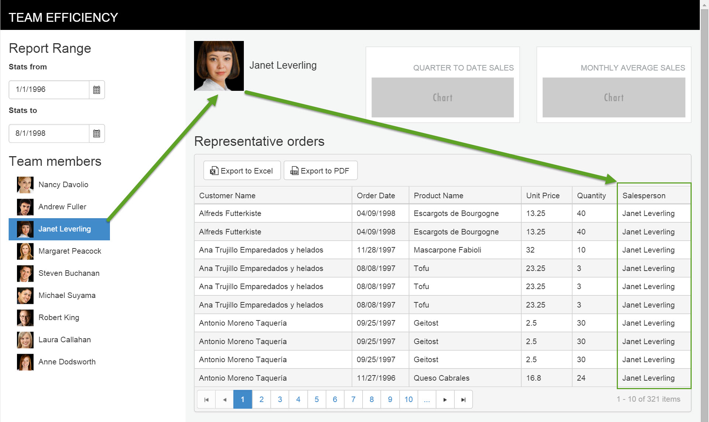
At this point EmployeeList is acting as a filter for EmployeeSales, however the data shown does not reflect the StatsFrom/StatsTo date range. With the filtering code in place, additional controls are wired up with relative ease. Let's wire up the StatsFrom/StatsTo DatePickers to EmployeeSales.
Exercise: Trigger the grid datasource from a DatePicker event.
In the view /Views/Home/Index.cshtml find the StatsFrom DatePicker.
@(Html.Kendo().DatePicker()
.Name("StatsFrom")
.Value(new DateTime(1996, 1, 1))
)
Add the Events property and set the Change event to onCriteriaChange.
@(Html.Kendo().DatePicker()
.Name("StatsFrom")
.Value(new DateTime(1996, 1, 1))
.Events(e => e.Change("onCriteriaChange"))
)
Find the StatsTo DatePicker and set the Events property and set the Change event to onCriteriaChange.
@(Html.Kendo().DatePicker()
.Name("StatsTo")
.Value(new DateTime(1998, 8, 1))
.Events(e => e.Change("onCriteriaChange"))
)
Save the changes and refresh the browser. StatsFrom/StatsTo and EmployeeList will update EmployeeSales with data based on the selected dates and employee.
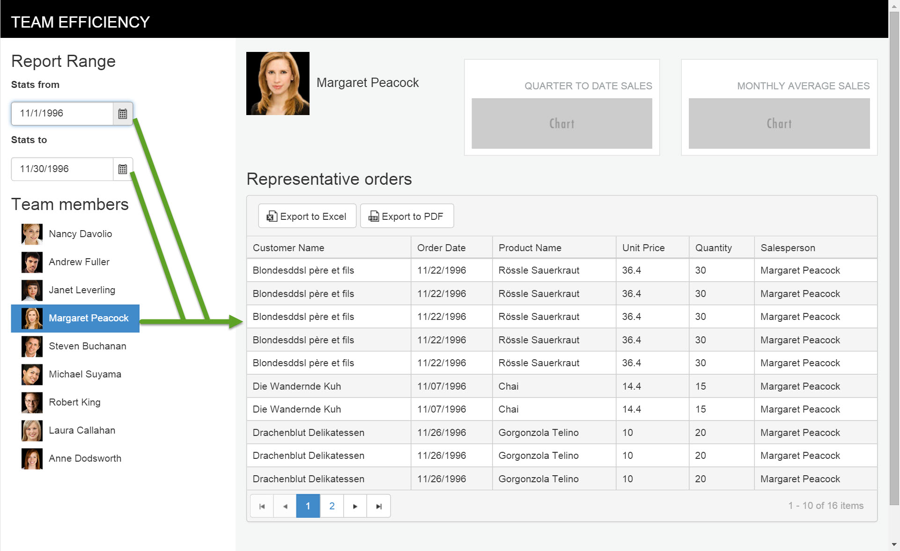
Your Team Efficiency Dashboard is now interactive, users can filter data using dates and employees. Next, you'll enhance the application by adding some data visualizations.
Kendo UI Charts
In this chapter you'll learn how to add Kendo UI Chart widgets to your application. The Telerik ASP.NET MVC chart, powered by Kendo UI, is a powerful data visualization component, which allows you to graphically represent your data. It is useful when you would like to utilize modern browser technologies such as SVG or Canvas (with a fallback to VML for older IE versions) for interactive data visualizations.
The component offers a variety of chart types such as area, bar, line, scatter, polar, radar, pie and donut, stock (OHLC) and many more.
Chart API
The Chart HtmlHelper extension is a server-side wrapper for the Kendo UI Chart widget.
Example:
@(Html.Kendo().Chart(Model) // The chart will be bound to the Model which is the InternetUsers list
.Name("internetUsersChart") // The name of the chart is mandatory. It specifies the "id" attribute of the widget.
.Title("Internet Users")
.Series(series => {
series.Bar(model => model.Value) // Create a bar chart series bound to the "Value" property
.Name("United States");
})
.CategoryAxis(axis => axis
.Categories(model => model.Year)
)
)
Bullet Series Chart
Begin by adding a Bullet chart, a variation of a bar chart. Bullet charts make great dashboard gauges or meters. The bullet graph compares a given quantitative measure against qualitative ranges and a symbol marker.
Exercise: Add a bullet series chart.
Since changes to the controller are necessary, stop the application if it is running.
Use partials to keep the markup tidy. Under 'Views/Home/' add a new empty partial view '_QuarterToDateSales.cshtml'
In the new partial view _QuarterToDateSales.cshtml add a new Kendo UI Chart helper of type QuarterToDateSalesViewModel. The QuarterToDateSalesViewModel is part of the quick start bolierplate.
@(Html.Kendo().Chart<KendoQsBoilerplate.QuarterToDateSalesViewModel>()
)
Set the Name property to EmployeeAverageSales.
.Name("EmployeeQuarterSales")
Using the .HtmlAttributes property Set the controls height to 30px.
.HtmlAttributes(new { style = "height:30px;" })
Next, add and define a Bullet chart with the following properties.
- Set the current value to the
Currentproperty on the model. - Set the target value to the
Targetproperty on the model.
.Series(series =>
{
series.Bullet(model => model.Current, model => m.Target);
})
Next, add and configure the Category Axis. Since the chart will be a spark line visualization, set these properties to false
- Visible
- MajorGridLines
.CategoryAxis(ca => ca.Labels(lab => lab.Visible(false))
.MajorGridLines(m => m.Visible(false)).Visible(false)
)
Next, add and configure the ValueAxis with a Numeric configuration.
Since the chart will be a spark line visualization, set these Visible properties to false to disable them.
- Labels
- MajorGridLines
- MajorTicks
.ValueAxis(va => va.Numeric()
.Labels(lab => lab.Visible(false))
.MajorGridLines(m => m.Visible(false))
.MajorTicks(mT => mT.Visible(false))
)
Also set the Legend to false
.Legend(leg => leg.Visible(false))
Configure the DataSource by setting Read to the action EmployeeQuarterSales on the Home controller.
Using the Data property, set the value to getEmployeeFilter sending filter data back to the Read action.
Since the DataSource will be invoked on manually, set AutoBind to false
.AutoBind(false)
The resulting code should be:
@(Html.Kendo().Chart<KendoQsBoilerplate.QuarterToDateSalesViewModel>()
.Name("EmployeeQuarterSales")
.HtmlAttributes(new { style = "height:30px;" })
.Series(series =>
{
series.Bullet(m => m.Current, m => m.Target);
})
.CategoryAxis(ca => ca.Labels(lab => lab.Visible(false))
.MajorGridLines(m => m.Visible(false)).Visible(false)
)
.ValueAxis(va => va.Numeric()
.Labels(lab => lab.Visible(false))
.MajorGridLines(m => m.Visible(false))
)
.Legend(leg => leg.Visible(false))
.DataSource(ds => ds
.Read(read => read.Action("EmployeeQuarterSales", "Home")
.Data("getEmployeeFilter"))
)
.AutoBind(false)
)
Open controllers/HomeController.cs and create a controller action named EmployeeAverageSales on the Home controller. This action will supply the Chart with data.
The boilerplate installed in Chapter 1 has a function named EmployeeQuarterSales, this query will select the data required for the chart. Return the results of EmployeeQuarterSalesQuery as JSON.
public ActionResult EmployeeQuarterSales(int employeeId, DateTime statsTo)
{
DateTime startDate = statsTo.AddMonths(-3);
var result = EmployeeQuarterSalesQuery(employeeId, statsTo, startDate);
return Json(result, JsonRequestBehavior.AllowGet);
}
Add the partial view to the main application page.
In Views/Home/Index.cshtm find the <!-- QTD Sales Chart --> placeholder.
<!-- QTD Sales Chart -->
@Html.Placehold(430, 120, "Chart")
Replace the placeholder with the _QuarterToDateSales partial.
<!-- QTD Sales Chart -->
@Html.Partial("_QuarterToDateSales")
Find the scripts section.
<script>
...
</script>
Add a new function named refreshEmployeeQuarterSales, this function will invoke read on the chart's DataSource.
The resulting code should be:
function refreshEmployeeQuarterSales() {
var employeeQuarterSales = $("#EmployeeQuarterSales").data("kendoChart");
employeeQuarterSales.dataSource.read();
}
Find and modify the onCriteriaChanged function so it calls refreshGrid updating the entire dashboard when a filter is changed.
function onCriteriaChange() {
updateEmployeeAvatar();
refreshGrid();
refreshEmployeeQuarterSales();
}
Run the application to see the chart render on the dashboard. Change the filter criteria to see the chart update along with other UI elements.
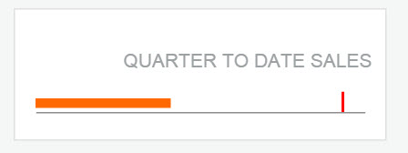
Line Chart
Next, add a Line chart, a Line chart shows data as continuous lines that pass through points defined by their items' values. It can be useful for showing a trend over time and comparing several sets of similar data. For this example, you'll use a Line chart to show trend data.
Exercise: Trigger the grid datasource from a DatePicker event.
Since changes to the controller are necessary, stop the application if it is running.
Use partials to keep the markup tidy. Under 'Views/Home' add a new empty partial view '_MonthlySalesByEmployee.cshtml'
In the new partial view _MonthlySalesByEmployee.cshtml add a new Kendo UI Chart helper.
@(Html.Kendo().Chart<KendoQsBoilerplate.MonthlySalesByEmployeeViewModel>()
)
Set the Name property to EmployeeAverageSales.
.Name("EmployeeAverageSales")
Set the controls height to 30px.
.HtmlAttributes(new { style = "height:30px;" })
Next, add and define a Series chart with the following properties.
- Set
Lineto theEmployeeSalesproperty on the model. - Set the
Widthto1.5 - Disable markers by setting the
Markersvisible property tofalse - Set the tooltip using an inline Kendo UI Template
#=kendo.toString(value, 'c2')#
.Series(series =>
{
series.Line(model => model.EmployeeSales)
.Width(1.5)
.Markers(m => m.Visible(false))
.Tooltip(t => t.Template("#=kendo.toString(value, 'c2')#"));
})
Next, add and configure the Category Axis with a Date configuration
Set the Category to the Date field of the view model
Since the chart will be a formatted like a sparkline, set these Visible properties to false to disable them.
- Axis Visible
- MajorGridLines Visible
.CategoryAxis(ca => ca
.Date()
.Categories(model => model.Date)
.Visible(false)
.MajorGridLines(m => m.Visible(false))
)
Next, add and configure the ValueAxis with a Numeric configuration.
Set the following Visible properties to false to disable them.
- Axis Visible
- Labels Visible
- MajorGridLines Visible
.ValueAxis(va => va.Numeric()
.Visible(false)
.Labels(lab => lab.Visible(false))
.MajorGridLines(m => m.Visible(false))
)
Also set the Legend to false
.Legend(leg => leg.Visible(false))
Configure the DataSource by setting Read to the action EmployeeAverageSales on the Home controller.
Using the Data property, set the value to getEmployeeFilter sending filter data back to the Read action.
Add an Aggregates on the DataSource to Average the EmployeeSales.
.DataSource(ds => ds
.Read(read => read.Action("EmployeeAverageSales", "Home")
.Data("getEmployeeFilter"))
.Aggregates(a => a.Add(model => model.EmployeeSales).Average())
)
Since the DataSource will be invoked on manually, set AutoBind to false
.AutoBind(false)
The resulting code should be:
@(Html.Kendo().Chart<KendoQsBoilerplate.MonthlySalesByEmployeeViewModel>()
.Name("EmployeeAverageSales")
.HtmlAttributes(new { style = "height:30px;" })
.Series(series =>
{
series.Line(model => model.EmployeeSales)
.Width(1.5)
.Markers(m => m.Visible(false))
.Tooltip(t => t.Template("#=kendo.toString(value,'c2')#"));
})
.CategoryAxis(ca => ca
.Date()
.Categories(model => model.Date)
.Visible(false)
.MajorGridLines(m => m.Visible(false))
)
.ValueAxis(va => va.Numeric()
.Visible(false)
.Labels(lab => lab.Visible(false))
.MajorGridLines(m => m.Visible(false))
)
.Legend(leg => leg.Visible(false))
.DataSource(ds => ds
.Read(read => read.Action("EmployeeAverageSales", "Home")
.Data("getEmployeeFilter"))
.Aggregates(a => a.Add(model => model.EmployeeSales).Average())
)
.AutoBind(false)
)
Open controllers/HomeController.cs and create a controller action named EmployeeAverageSales on the Home controller. This action will supply the Chart with data.
The boilerplate installed in Chapter 1 has a function named EmployeeAverageSalesQuery, this query will select the data required for the chart. Return the results of EmployeeAverageSalesQuery as JSON.
public ActionResult EmployeeAverageSales(
int employeeId,
DateTime statsFrom,
DateTime statsTo)
{
var result = EmployeeAverageSalesQuery(employeeId, statsFrom, statsTo);
return Json(result, JsonRequestBehavior.AllowGet);
}
Add the partial view to the main application page.
In Views/Home/Index.cshtm find the <!-- Montly Sales Chart --> placeholder.
<!-- Montly Sales Chart -->
@Html.Placehold(430, 120, "Chart")
Replace the placeholder with the _MonthlySalesByEmployee partial.
<!-- Montly Sales Chart -->
@Html.Partial("_MonthlySalesByEmployee")
Find the scripts section.
<script>
...
</script>
Add a new function named refreshEmployeeAverageSales, this function will invoke read on the chart's data source.
The resulting code should be:
function refreshEmployeeAverageSales() {
var employeeAverageSales = $("#EmployeeAverageSales").data("kendoChart");
employeeAverageSales.dataSource.read();
}
Find and modify the onCriteriaChanged function so it calls refreshGrid updating the entire dashboard when a filter is changed.
function onCriteriaChange() {
updateEmployeeAvatar();
refreshGrid();
refreshEmployeeQuarterSales();
refreshEmployeeAverageSales();
}
Run the application to see the chart render on the dashboard. Change the filter criteria to see the chart update along with other UI elements.
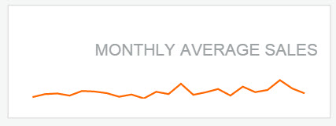
Client-Side API
Charts, like other Kendo UI widgets are easy to interact with on the client side. By handling the chart's events additional functionality can be added to the application. Use the DataBound event and the DataSource to populate values on labels within the Team Efficiency Dashboard.
Exercise: Display chart values using client APIs.
In Views/Home/Index.cshtm, find the scripts section.
<script>
...
</script>
Add a function named onQuarterSalesDataBound, find the first element of the datasource and displays the Current value in EmployeeQuarterSalesLabel.
function onQuarterSalesDataBound(e) {
var data = this.dataSource.at(0);
$("#EmployeeQuarterSalesLabel").text(kendo.toString(data.Current, "c2"));
}
Add a function named onAverageSalesDataBound find the dataSource aggregates and display the average of EmployeeSales in the EmployeeAverageSalesLabel.
function onAverageSalesDataBound(e) {
var label = $("#EmployeeAverageSalesLabel"),
data = this.dataSource.aggregates()
if (data.EmployeeSales) {
label.text(kendo.toString(data.EmployeeSales.average, "c2"));
} else {
label.text(kendo.toString(0, "c2"));
}
}
Open the partial view _MonthlySalesByEmployee.cshtml and add a DataBound event handler to the chart, set the event handler to onQuarterSalesDataBound.
@(Html.Kendo().Chart<KendoQsBoilerplate.MonthlySalesByEmployeeViewModel>()
...
.AutoBind(false)
.Events(e => e.DataBound("onAverageSalesDataBound"))
)
Open the partial view _QuarterToDateSales.cshtml and add a DataBound event handler to the chart, set the event handler to onQuarterSalesDataBound.
@(Html.Kendo().Chart<KendoQsBoilerplate.QuarterToDateSalesViewModel>()
...
.AutoBind(false)
.Events(e => e.DataBound("onQuarterSalesDataBound"))
)
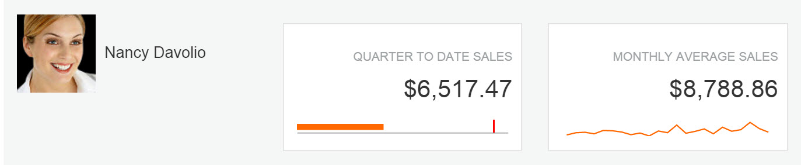
The Team Efficiency Dashboard is starting to look complete, but it hasn't been tested for devices like mobile phones or tablets yet. In the next chapter you'll use responsive web design techniques to support devices beyond the desktop.
Go Responsive
In this chapter you'll learn how to make the dashboard application look amazing on any device size. The Team Efficiency Dashboard layout uses Bootstrap for some basic responsive functionality, however more detailed controls like the grid need extra attention to ensure a proper user experience on any device size. In the next few steps you'll take the app from desktop, to anywhere, with a few key changes.
Responsive Grid
Run the project and shrink the browser window horizontally to about 400 pixels wide. Refresh the browser and observe how the application elements stack nicely, but the grid bleeds off the page. There is simply too much information in the grid to show at this screen size. By setting a few properties we can remove non-essential columns from the grid for small screens.
Exercise: Make the grid mobile friendly with responsive APIs.
Open Views/Invoice/Index.cshtml and find where the Columns are defined in the EmployeeSales grid.
.Columns(columns =>
{
...
})
First, remove the Salesperson column completely. The sales person is already displayed at the top of the page.
Set the MinScreenWidth of the CustomerName column to 900. This means that the column will no longer be displayed on screen sizes less than 900 pixels wide.
Set the MinScreenWidth of the ProductName column to 768. This means that the column will no longer be displayed on screen sizes less than 768 pixels wide.
.Columns(columns =>
{
columns.Bound(c => c.CustomerName).MinScreenWidth(900);
columns.Bound(c => c.OrderDate).Format("{0:MM/dd/yyyy}");
columns.Bound(c => c.ProductName).MinScreenWidth(768);
columns.Bound(c => c.UnitPrice);
columns.Bound(c => c.Quantity);
})
Refresh the page, then shrink and grow the browser to different widths to see how the grid reacts at various sizes.
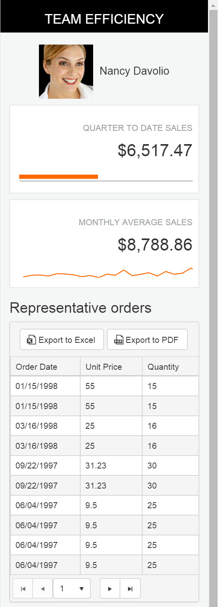
Responsive Panel
When changing the screen size you may have noticed the Report Range side bar disappear. If not, take a moment to adjust the browser width again to see the side bar's behavior. Currently the side bar is hidden using Bootstrap's hidden-xs class. Bring back the side bar using a Kendo UI ResponsivePanel and make a seamless user experience on any device size.
Exercise: Add a responsive panel side bar.
Open Views/Home/Index.cshtml and find the <!-- Menu Panel --> placeholder.
Below the <!-- Menu Panel --> placeholder add a ResponsivePanel. Set the Name to menuPanel and set the Breakpoint to 768.
Add a Content property and include all of the elements until you reach the ending placeholder <!-- /Menu Panel -->
Note: The "at" symbol
@is used as an escape charter for HTML content.
The resulting code should be:
<!-- Menu Panel -->
@(Html.Kendo().ResponsivePanel().Name("menuPanel").Breakpoint(768).Content(
@<div class="hidden-xs" style="float:left;">
...
</div>
))
<!-- /Menu Panel -->
Remove class="hidden-xs" style="float:left;" from the div element in the newly added responsive panel.
<!-- Menu Panel -->
@(Html.Kendo().ResponsivePanel().Name("menuPanel").Breakpoint(768).Content(
@<div>
...
</div>
))
<!-- /Menu Panel -->
Next, add a button for users to tap and toggle the responsive panel.
Find the following block of code:
<section id="app-title-bar" class="row">
<div class="col-sm-3">
<h1 class="title">@ViewBag.Title</h1>
</div>
</section>
After the section's closing tag </section>, add a new div with a class of hamburger.
Inside the hamburger div, create a Kendo UI Button. Set the button's following properties:
- Name: menuPanelOpen
- Content: menu
- Icon: hbars
- HtmlAttributes: new { @class = "k-rpanel-toggle" }
Note: Any element with the class
k-rpanel-togglewill be able to toggle the current page's responsive panel.
<div class="hamburger">
<!-- toggle button for responsive panel, hidden on large screens -->
@(Html.Kendo().Button()
.Name("menuPanelOpen")
.Content("menu")
.Icon("hbars")
.HtmlAttributes(new { @class = "k-rpanel-toggle" }
)
</div>
Open Content/Site.css and find the /* Top Bar */ placeholder.
/* Top Bar */
Add a style that selects the hamburger element and sets the position to absolute. Give the style a top of 5 and left of 5 to create a margin around the element.
.hamburger {
position: absolute;
top: 5px;
left: 5px;
}
Add a style that selects the menuPanel. Set a solid background color of #fff (white), include a padding of 10px and z-index of 3. This style will ensure that the panel appears above other UI elements and has a solid background.
#menuPanel {
background-color: #fff;
padding: 10px;
z-index: 3;
}
Run or refresh the application. Expand and contract the browser's width, notice the menu button appear when the browser is small. Click the menu button to open the panel. Click beside the panel to collapse it.
For a better user experience, add close button to the panel so the interaction is discoverable and intuitive.
Find the menuPanel and add a Kendo UI Button inside the Content's first div. Set the button's properties to:
- Name: menuPanelClose
- Content: Close
- Icon: close
- HtmlAttributes: new { @class = "k-rpanel-toggle" }
Wrap the button in a div with a class of text-right to position the button on the right hand edge of the panel.
@(Html.Kendo().ResponsivePanel().Name("menuPanel").Breakpoint(768).Content(
@<div>
<div class="text-right">
@(Html.Kendo().Button()
.Name("menuPanelClose")
.Content("Close")
.Icon("close")
.HtmlAttributes(new { @class = "k-rpanel-toggle" })
)
</div>
...
</div>
Refresh the application. Expand and contract the browser's width until the menu button is shown. Toggle the responsive panel using the menu and close buttons.
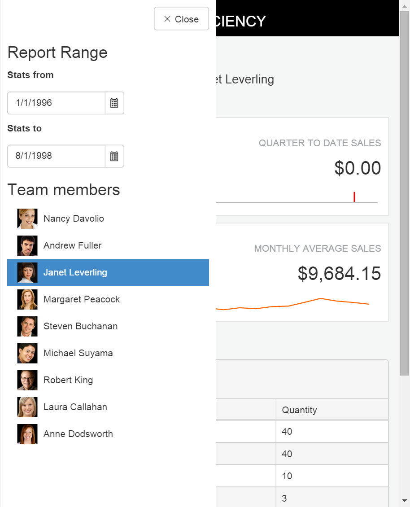
The application is almost complete, just apply a nice bright theme and it will be ready to ship.
Kendo UI Themes
Kendo UI widgets include a number of predefined themes. In this chapter you'll learn how to make your app look amazing using Kendo UI themes.
Theme Change
Exercise: Theme the application.
If the project is running, stop the project.
In Visual Studio's Project Explorer, Right click on the project and choose Telerik UI For MVC > Configure Project from the menu.
From the Project Configuration Wizard, choose the Nova theme.
Open Views/Shared/_Layout.cshtml and move @Styles.Render("~/Content/css") just above the closing head tag </head>.
Run the application to see the theme applied to the Kendo UI widgets.
Next, you'll be finishing the theme by adding styles to non-Kendo UI elements creating a completely custom look.
A style sheet was installed with the boilerplate to give you a jump-start. Add it to the application by opening Views/Shared/_Layout.cshtml and adding a reference to ~/Content/site-nova.css just above the closing head tag </head>.
Note: This is CSS, so the order in which the style sheets are added is very important.
<link href="~/Content/site-nova.css" rel="stylesheet" />
</head>
Refresh the application and notice the look is starting to come together. There's just a few items that could use some fine-tuning. Let's add some additional styles to site-nova.css to complete the theme.
Open site-nova.css and find /* Side Panel - Employee List */. Add a style that sets the date picker widgets inside the menuPanel to %100 width of the container.
The resulting code should be:
/* Side Panel - Employee List */
#menuPanel .k-widget.k-datepicker.k-header {
width: 100%;
}
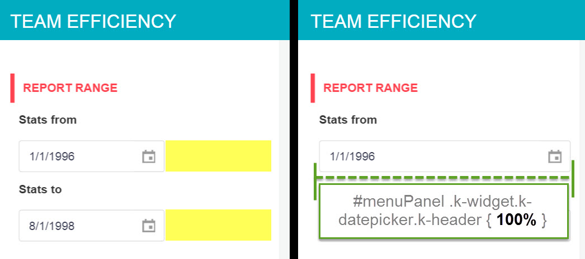
Add a style to offset the employee list so its content lines up with the left edge of its container.
#employee-list > ul {
margin: 0 -10px;
}
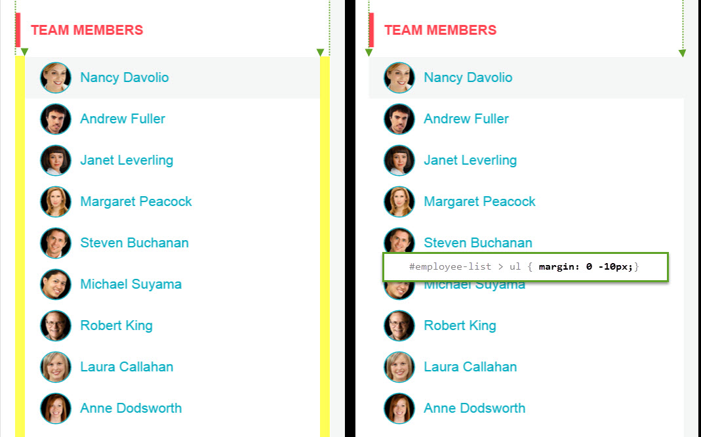
Find /* Small Devices, Tablets, and Up */. Here you'll find a media query that will hold some styles that are only applied to scree sizes above 768px.
@media only screen and (min-width : 768px) {
}
Inside the media query add a selector for .app-wrapper and set a left margin of -15 and set the position to relative. This style will align the app with the left hand edge of the screen.
/* Small Devices, Tablets, and Up */
@media only screen and (min-width : 768px) {
.app-wrapper {
position: relative;
margin-left: -15px;
}
}
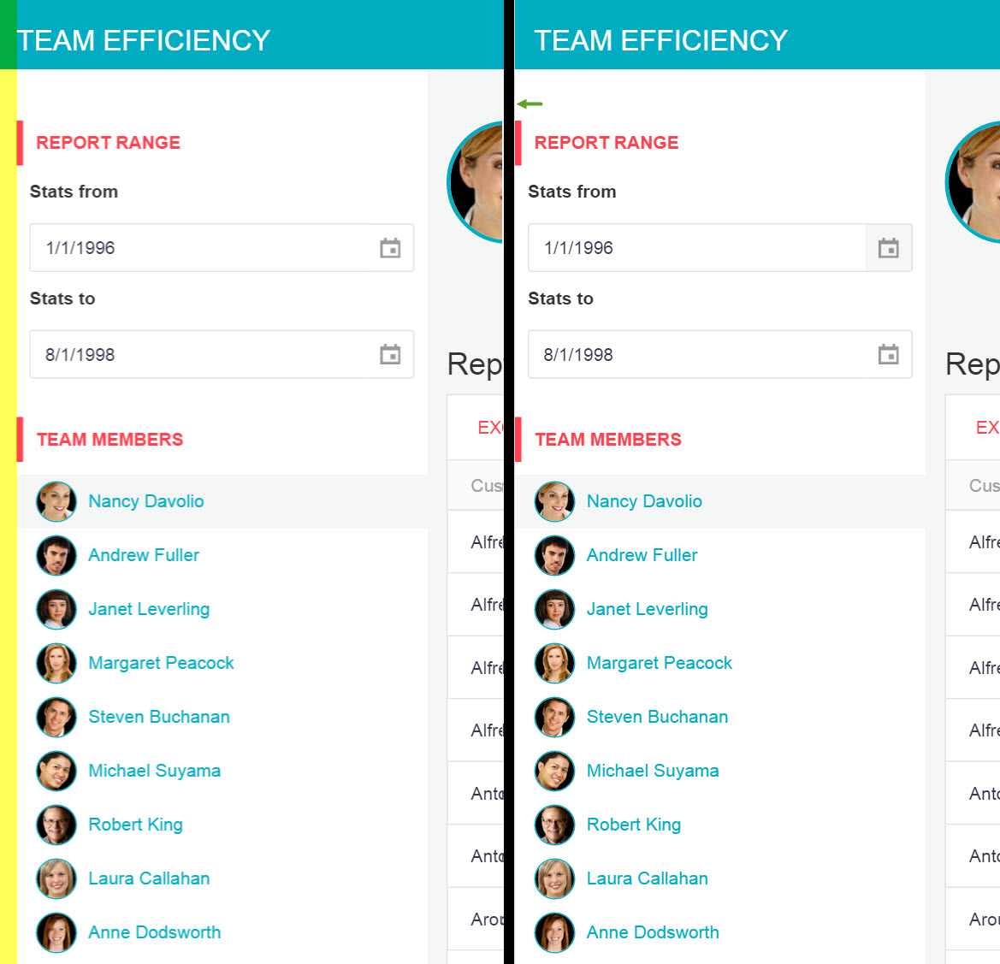
Finally, set the Kendo UI Chart themes.
Open _MontlySalesByEmployee.cshtml and set the Theme property to nova on the EmployeeAverageSales chart.
@(Html.Kendo().Chart<KendoQsBoilerplate.MonthlySalesByEmployeeViewModel>()
.Name("EmployeeAverageSales")
...
.AutoBind(false)
.Events(e => e.DataBound("onAverageSalesDataBound"))
.Theme("nova")
)
Open _QuarterToDateSales.cshtml and set the Theme property to nova on the EmployeeQuarterSales chart.
@(Html.Kendo().Chart<KendoQsBoilerplate.QuarterToDateSalesViewModel>()
.Name("EmployeeQuarterSales")
...
.AutoBind(false)
.Events(e => e.DataBound("onQuarterSalesDataBound"))
.Theme("nova")
)
And... that's it! You've created an interactive dashboard application using Telerik UI for MVC and Kendo UI. In the process you've mastered scaffolding, Kendo UI templates, charts, server and client-side APIs, responsive web design and themes.
Congratulations!
Next Steps
Your journey with Telerik is just beginning. Here are some resources to help you figure out where to go from here.
- Follow @telerik on Twitter for the latest and greatest news about Telerik UIs.
- Check out the Telerik UI for ASP.NET MVC roadmap to see what's coming next.
- Find comprehensive demos of individual widgets and complete applications.